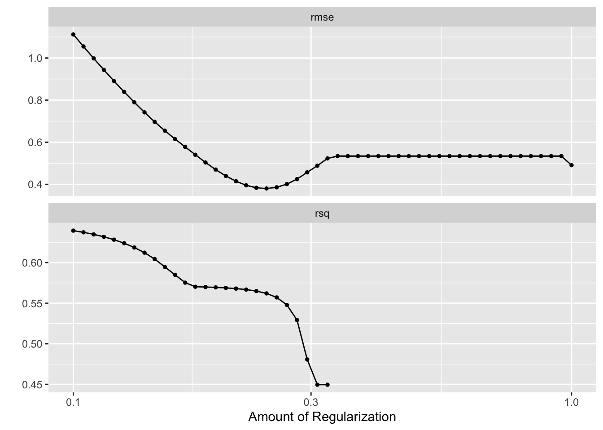

── Column specification ────────────────────────────────────────────────────────
Delimiter: ","
chr (1): series_id
dbl (135): ball_possession_time_diff, ball_time_in_side_diff, core_shots_dif...
ℹ Use `spec()` to retrieve the full column specification for this data.
ℹ Specify the column types or set `show_col_types = FALSE` to quiet this message.
→ A | warning: A correlation computation is required, but `estimate` is constant and has 0 standard deviation, resulting in a divide by 0 error. `NA` will be returned.
There were issues with some computations A: x1
There were issues with some computations A: x2
There were issues with some computations A: x3
There were issues with some computations A: x4
There were issues with some computations A: x5
There were issues with some computations A: x6
There were issues with some computations A: x7
There were issues with some computations A: x8
There were issues with some computations A: x9
There were issues with some computations A: x10
There were issues with some computations A: x10
autoplot(RL_tune_res)

RL_workflow_final <-finalize_workflow(RL_workflow, select_best(RL_tune_res, metric ="rmse"))RL_fit <-fit(RL_workflow_final, data = RL_train)results <-fit(RL_workflow_final, data = RL_numeric_df) %>%tidy() %>%filter(estimate !=0)print(results, n =42)